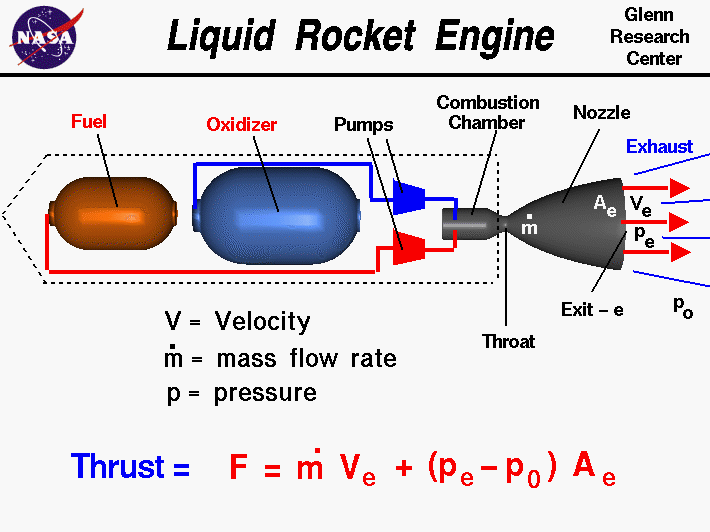
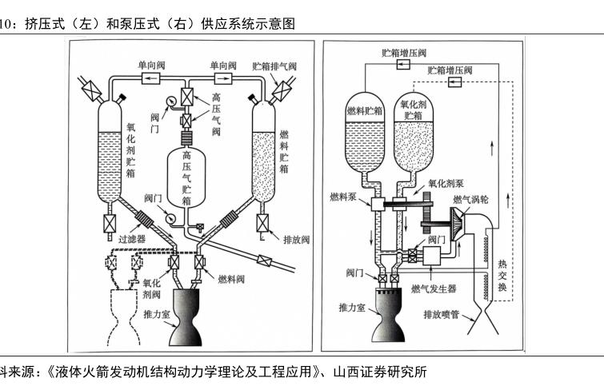

Rocket "SDLC" :
The V2 (German: Vergeltungswaffe 2, lit. 'Retaliation Weapon 2'), with the technical name Aggregat 4 (A4), was the world's first long-range[4] guided ballistic missile. The missile, powered by a liquid-propellant rocket engine, was developed during the Second World War in Nazi Germany as a "vengeance weapon" and assigned to attack Allied cities as retaliation for the Allied bombings of German cities. The V2 rocket also became the first artificial object to travel into space by crossing the Kármán line (edge of space) with the vertical launch of MW 18014 on 20 June 1944.[5]
Source: https://en.wikipedia.org/wiki/V-2_rocket
There are several options for liquid rocket fuel
Liquid Propellent FuelOverview :
Methods for Liquid Fuel System :
